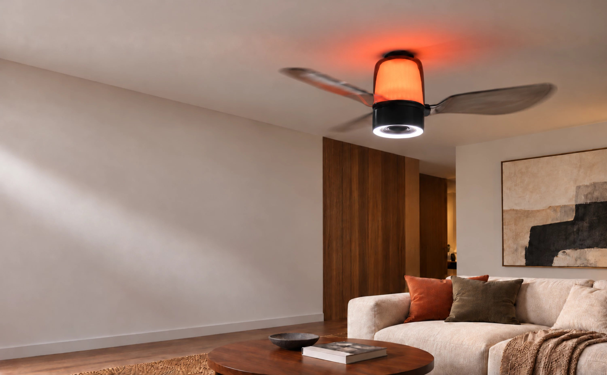

TL;DR
- For a bedroom or living room, start with roughly 10–20 lumens per square foot across all the room’s lights.
- AirFi One’s main light is rated at 850 lumens with its shade fitted. Plan it alongside bedside lamps, reading lights or other fixtures.
- Put task lights close to a book or work surface. Dark finishes, high ceilings and seats far from the ceiling light call for closer attention to placement.
A ceiling fan light replacing the room’s only fixture needs to supply most of its light. One joining a room with lamps can take a smaller share. Start with floor area, then decide where you need light for reading, dressing and other daily tasks.
How many lumens does your room need?
Hunter’s lighting guide suggests roughly 10–20 lumens per square foot for bedrooms and living rooms. Multiply length by width to find the floor area, then multiply that area by 10 and 20. The result is a starting range for all the lights in the room.
| Example room | Floor area | Total light output | Where to add light |
|---|---|---|---|
| 10 × 10 ft | 100 sq ft | 1,000–2,000 lm | At a bedside or reading chair, especially if the ceiling light is behind the reader. |
| 12 × 12 ft | 144 sq ft | 1,440–2,880 lm | Beside the bed or at a desk, with enough room light for dressing. |
| 12 × 16 ft | 192 sq ft | 1,920–3,840 lm | Near seats beyond the central ceiling light. |
| 15 × 20 ft | 300 sq ft | 3,000–6,000 lm | Across separate activity areas, including the far end of the room. |
Use these ranges to shop for general room lighting. The light reaching a page or desk also depends on fixture height, shades and beam spread. Kitchens and detailed work need a separate task-lighting plan.
How much of that light should come from the fan?
Choose a total within the room-size range, then subtract the rated output of the other lights you plan to use at the same time. The remaining amount is a starting target for the fan light. If it will be the only fixture, use the full room total as the shopping target.
For example, a 12 × 12 ft bedroom has a starting range of 1,440–2,880 lumens. Suppose you choose 2,400 lumens and keep two bedside fixtures rated at 800 lumens each with their shades fitted. That leaves 2,400 − 1,600 = 800 lumens for the fan light. AirFi One’s shaded 850-lumen main light fits this plan. Without those lamps, its 850 lumens would fall below the room’s starting range.
Count only lights that will be on together. A bedside lamp switched off while you get dressed contributes nothing at the wardrobe; use the room plan to place enough light at each activity.
Compare lumens with the shade fitted
Lumens measure light output; watts measure electrical power. ENERGY STAR recommends choosing brightness by lumens. For a fan light, look for the rating of the complete fixture with its diffuser or shade in place.
A listing may instead give the bare LED output or the output of each bulb. Check the number of bulbs and the shade: some of their light will be absorbed before it reaches the room.
Your current lighting is a useful reference. After dark, note where it feels too dim and which lamps you use with it. A lamp beside a shadowed chair may be more useful than a brighter ceiling light.
Where AirFi One fits
AirFi One’s main light is rated at 850 lumens with its shade fitted. For the rooms above, pair it with other lighting. If the fan light will be the room’s only light source, use the room-size estimate to shortlist fixtures, then consider how their light will reach the areas you use.
AirFi One suits an update that adds a ceiling fan and music along with adjustable light. Its main light dims from 10–100% and offers 3000K, 4000K and 6500K white-light settings. A separate RGB ring provides colored lighting.
The fan, main light, RGB ring and speaker operate independently, so music and airflow can continue with the ceiling light dimmed. On the remote, hold the main-light button to adjust brightness or double-press it to change the white-light setting.

Place light where you use the room
Bedrooms
Check the wardrobe and floor with the room lights on, then arrange bedside lamps for reading. Place each lamp so it lights the page from the reader’s usual position, with the bulb out of direct view. The Your Home lighting guide recommends putting task lights close to activities such as reading and homework.
Larger or open living areas
Mark the sofa, dining table and desk on a simple plan. A chair at the far end may need its own light, even when the room’s combined lumen total looks sufficient. For AirFi One, also check that the ceiling position works for the fan and follow its mounting requirements.
Dark finishes or high ceilings
Dark walls absorb more light, while a higher mounting point changes its spread. Pay particular attention to corners and reading spots. A floor lamp or desk light can fill a local gap without making the whole room brighter.
Place the lights in the bedroom plan
Use the same 12 × 12 ft bedroom plan to place the lights. The room has light-colored walls and needs light for dressing and for reading on both sides of the bed.
- Keep a lamp beside each reader, positioned so the person’s head does not cast a shadow on the page.
- With AirFi One and both 800-lumen shaded fixtures on, the planned total is 2,450 lumens. Check whether the wardrobe doors or an open door block light where you dress.
- After installation, check the wardrobe, floor and both reading positions after dark. Move or adjust a lamp if the page is shadowed or catches glare. Add local light where needed, then try the dimmer settings you will use at bedtime.
Lighting questions before you buy
Should I count daylight in the room’s lumen budget?
Size the lighting for after-dark use, with curtains or blinds in their usual nighttime position. Daylight will let you turn down or switch off some lights during the day.
Does choosing 6500K give me more lumens?
6500K gives the light a cooler appearance. For brightness, compare the lumen output at that setting.
Will a larger blade span give me a brighter fan light?
Use blade span to plan the space around the fan and the lumen rating to plan room lighting. For AirFi One, allow for its nominal 48-inch span and include its shaded 850-lumen main light in the room’s lighting total.
Can I use my existing wall dimmer to adjust AirFi One’s light?
Ask your installer to confirm compatibility with the exact wall dimmer before reusing it. AirFi One’s main light can be dimmed with its supplied remote.